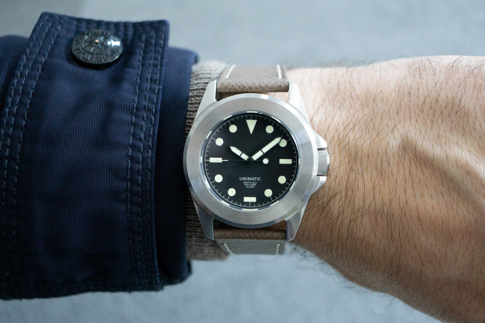
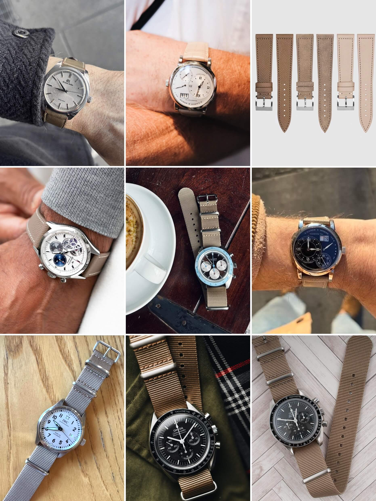
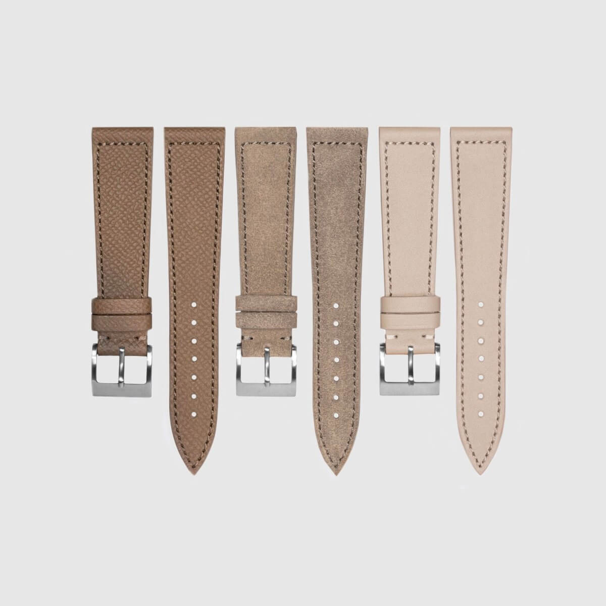

Is Taupe the New Go-To Watch Strap Color?
Attention, watch enthusiasts. There is a new color taking over collections everywhere and getting a momentum: taupe. At least if you hang out in the same nerdy corners of the internet that I do. Some are even saying taupe is the "new grey" when it comes to finding the perfect strap. Is toupe really that big?
 Nenad Pantelic • March 10, 2025
Nenad Pantelic • March 10, 2025

It feels like just yesterday everyone was hunting for that deep oxblood leather. Then it was all about rich burgundy Shell Cordovan, and after that, bright mustard yellow had its moment. Taupe seems to be the trending color right now.
Why Taupe?
Honestly, it just works. It is this calm, earthy middle ground between brown and grey that looks awesome with pretty much any watch. Got a white dial? Taupe looks great. Black dial? For sure. Silver dial, blue dial? Check. Steel case, gold case, titanium? Taupe handles them all without looking boring or clashing. It is subtle but definitely has character, and it is definitely not your standard black or brown.
In my opinion, the best qualities of taupe are neutrality and balance.
The brown and grey color blend creates a sense of neutrality, making the straps neither strongly warm nor cool. This inherent balance is key to the broad appeal, as it avoids the strong emotions often linked to more saturated or distinctly warm/cool colors. Instead, taupe gives a stable and grounded foundation.
@taupestrapclub
Two watch enthusiasts, Justin Hast and Wesley Smith of Standard H, are really leaning into this trend. They actually went and created an Instagram account @taupestrapclub.
The account showcases photos of different watches paired with taupe straps, submitted by themselves and other collectors and enthusiasts.
It is exactly the kind of focused obsession that makes watch collecting so fun. Or something that I might call "cool, top level watch nerdery."

Things got even more official recently when Justin teamed up with Molequin. They put out a special set of three different straps, all in taupe. Seeing a brand get involved like that really shows this is not just a couple of guys liking a color, but a proper trend.
Molequin has taken the best of their taupe straps in suede, smooth calf, and grained calf, added Justin's personal touch (a box stitch tone-on-tone thread), and created a 3-pack called Taupe 3 Ways.

A Sign of Evolving Collector Taste
It is interesting to follow how trends in watch collecting evolve and how certain colors and styles get popularity. The world of watches (we need a new phrase for this) is constantly changing, and it is always fun to see what new trends rise to the top.
Enthusiasts are gradually moving away from the classic brown, black, and grey options and adopting more unique and interesting colors, like taupe. In my opinion this shift shows that collectors are maturing and trying to break free from outdated beliefs.
If you are curious or already on the taupe train, definitely visits the @taupestrapclub Instagram account. Give it a follow, check out the combos, and if you have got a watch on a taupe strap, snap a picture and share it.